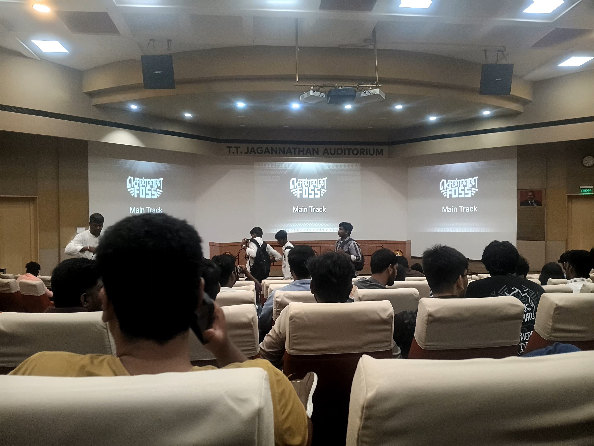

Introduction: Experiencing the Open-Source Community
FOSS United Chennai at IIT Madras was a full day immersed in the open-source community. Unlike conferences where you passively listen to talks, FOSS United created an environment where the philosophy of open-source collaboration was practiced, not just preached. People from diverse backgrounds—students, professionals, enthusiasts—gathered around shared values: transparency, collaboration, and accessible technology.
The event wasn't just about learning technologies; it was about understanding a different way of building software and a different mindset for approaching problems. It's easy to dismiss open-source as idealistic when you haven't experienced the community. Being there made the idealism feel practical.
The Philosophy of Open-Source Development
Open-source fundamentally operates on a different set of assumptions than proprietary software. It assumes that allowing people to see, modify, and improve code leads to better software. It trusts communities to self-organize around shared problems. It believes that transparency and collaboration compound—that many eyes catching bugs, suggesting improvements, and contributing features creates better outcomes than siloed development.
This philosophy has produced some of the most critical software in the world—Linux, Apache, Git, Python. But beyond the technical outcomes, open-source represents a different value system. It's about contributing to the commons rather than extracting value. It's about believing that shared problems are better solved collectively than individually.
The Contribution Mindset
One of the clearest lessons from FOSS United was the importance of the contribution mindset. Contributing to open-source isn't just about writing code—it's about understanding how projects are organized, respecting maintainers' time, communicating clearly, and working within established governance structures.
- Starting Small: Contributors often begin with documentation, bug reports, or small fixes. This builds trust and understanding before tackling larger features.
- Respecting Maintainers: Open-source projects are often maintained by volunteers. Understanding their time constraints and priorities is essential.
- Clear Communication: In distributed teams, written communication is critical. Issues, pull requests, and discussions must be clear and thorough.
- Learning from Reviews: Code review feedback in open-source is an education in itself. It teaches style, architecture, and community standards.
Scaling Open-Source Projects
We also discussed how open-source projects scale from hobby projects to critical infrastructure. The transition requires governance, funding models, clear communication channels, and mechanisms for handling conflicts. Some successful projects have used foundations (like the Linux Foundation) to manage their growth and ensure long-term sustainability.
Frappe Framework: Open-Source Enterprise Software
Frappe is an interesting case study in building enterprise software as open-source. Unlike infrastructure tools, enterprise software often needs to be self-hosted and customizable for different organizations. Frappe provides a framework for building business applications quickly—ERPs, CRMs, HRM systems—and keeps everything open source.
What makes Frappe interesting is its ecosystem approach. The framework itself is open-source, but around it has grown a community of developers building extensions, services, and specialized tools. This creates leverage for the core maintainers (Frappe Technologies) while remaining accessible to smaller organizations and developers.
Real-World Use Cases
During the sessions, we saw Frappe being used for diverse applications: inventory management systems, educational platforms, manufacturing workflows, and more. The framework's strength is in abstracting common patterns—forms, lists, workflows, permissions—so developers can focus on business logic rather than infrastructure.
- Rapid Development: With Frappe's pre-built components and conventions, building a functional business application takes days instead of months.
- Customization: The framework is designed to be extended. Organizations can customize workflows, add new modules, and adapt to their processes without forking the codebase.
- Community-Driven Development: The Frappe community contributes extensions, shares implementations, and helps organizations solve problems collectively.
- Open Data Models: Everything in Frappe—data schemas, business logic, workflows—is transparent and inspectable, allowing for better understanding and customization.
The Business Model
An important discussion was around how Frappe sustains itself as open-source. The company provides hosting, support, and managed services while keeping the core framework open. This creates alignment: users benefit from a robust, community-driven product, and the company sustains itself by providing value-added services. It's a model that respects the open-source spirit while enabling business sustainability.
Flutter and Nakama: Building Multiplayer Games with Open-Source
The session on Flutter and Nakama showed an interesting intersection: modern game development using open-source technologies. Flutter is Google's UI framework (originally for mobile, now for web and desktop), and Nakama is an open-source game server providing multiplayer features, authentication, matchmaking, and more.
Flutter: The UI Layer
Flutter's strength is in cross-platform development with high-performance rendering. Write once, deploy to iOS, Android, web, and desktop with a consistent experience. For game development, Flutter's performance is adequate for many game genres—strategy, puzzle, casual games benefit from its declarative programming model.
What makes Flutter interesting is its developer experience. Hot reload, excellent documentation, and a growing ecosystem reduce development friction. For independent developers and small studios, this matters. You spend less time fighting the framework and more time building your game.
Nakama: The Game Server
Nakama handles the complex server-side problems of game development: user authentication, session management, matchmaking, real-time multiplayer synchronization, and more. Instead of building these from scratch, developers can use Nakama's APIs and focus on game logic.
Being open-source means developers can self-host Nakama, understand its internals, contribute improvements, and customize it for specialized needs. This is powerful for independent developers and studios who want to maintain control over their backend infrastructure.
- Real-Time Multiplayer: Nakama handles synchronization and state management for real-time games, abstracting complex networking.
- Leaderboards and Analytics: Built-in support for tracking player progress, rankings, and game analytics without additional infrastructure.
- Extensibility: Custom server logic can be written in Lua or TypeScript, enabling specialized game mechanics and business logic.
- Open Infrastructure: Self-hosting means developers aren't locked into vendor platforms and can optimize for their specific requirements.
The Combination: Open-Source Game Development Stack
Together, Flutter and Nakama represent a complete, open-source stack for game development. An independent developer or small team can build a multiplayer game, host it on their own servers, and maintain full control over their infrastructure and data. This wasn't possible in previous eras when game development required expensive proprietary engines or vendor lock-in on backend services.
Key Takeaways
Open-Source is About Community, Not Just Code
The software is a byproduct of a collaborative mindset. Contributing to open-source means respecting processes, communicating clearly, and thinking in terms of shared problems.
Leverage Compounds Through Ecosystems
Build on top of others' work. Your solution might enable someone else's innovation. Network effects in open-source create exponential value.
Frappe Shows How Enterprise Software Can Be Open
Transparency and customizability can be features, not liabilities. Open enterprise software builds trust and enables better solutions.
Modern Indie Development Uses Open-Source Stacks
Frameworks like Flutter and servers like Nakama democratize game development. Independent developers now have access to tools that rival proprietary alternatives.
Contributing to Open-Source is Professional Development
Every contribution teaches you about code review, architecture, communication, and community standards. It's one of the best ways to grow as a developer.
Personal Reflection: The Case for Contributing to Open-Source
Before FOSS United, I had appreciated open-source software from a user perspective—I use Linux, Python, Git, and countless other projects daily. But I hadn't seriously considered contributing. The barriers felt high: unfamiliar codebases, established communities, uncertainty about whether my contributions would be valuable.
FOSS United changed that perspective. I saw that contributions don't have to be large or revolutionary. Fixing documentation, reporting bugs clearly, helping other users, or implementing small features—these are all valuable contributions. They help projects, build your reputation, and teach you an enormous amount about software development at scale.
I'm committing to contributing more meaningfully to open-source projects. I'm starting by understanding projects I use, exploring their codebases, identifying where I can help, and building relationships with communities. This will teach me more than any course, and it will contribute something of value to the broader ecosystem.
Event Highlights - Photo Gallery
Capturing the energy and collaboration of FOSS United Chennai. From presentations to discussions, the community-driven atmosphere that defines open-source events.
Moving Forward: Becoming Part of the Open-Source Movement
FOSS United Chennai reinforced something I believe deeply: that the future of software development is collaborative and open-source-first. The most interesting problems are being solved by communities, not companies. The most accessible learning happens in public projects. The most sustainable businesses are built on top of open-source foundations.
I came away with concrete plans: identify 2-3 open-source projects relevant to my interests, understand their contribution processes, and submit meaningful contributions within the next few months. I want to be part of communities that are building the infrastructure and tools that power modern technology.
If you're considering contributing to open-source but haven't started, this is your sign. The community is welcoming, the learning is profound, and the impact is tangible. FOSS United proved that there's no better way to grow as a developer than by building in public with others who care about the craft.